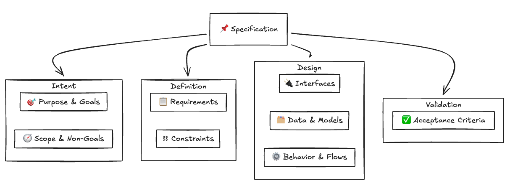

Spec-Driven Development
and a little bit of BDD
⚠️ This is mostly my 2 cents and personal opinions from working with AI in the past year. Take the key points at your own risk.
ACT 1
The Skeptic
The Promise vs Reality
"AI will write all your code!"
"Just describe what you want!"
"10x developer productivity!"
The Hype: Everyone's talking about AI-assisted development.
Copilot, ChatGPT, Claude—they're supposed to revolutionize how we build software.
My Initial Experience
It's nice as a fancy auto-complete, helps to write some complex functions, etc.
But to delegate whole end-to-end features?
Simply... it's not cutting it.
Then Agent Mode Came
A shift from just normal auto-complete...
To completely taking over:
- Full access to your codebase
- Control over your terminal
- Ability to read, write, and execute
This was a game changer.
But It Wasn't Enough
Well, it's awesome...
I can ask them to do many things. It "somehow" delivers.
But many times:
- Not delivering the code I'm expecting
- Not the exact experience I had in mind
More like a tool to play around, build some demos...
For real day-to-day work? I ended up rewriting the code myself.
ACT 2
The Turning Point
What if the problem isn't the AI?
Maybe it's how I'm using it.
What AI Actually Does Well
1. Executing specific instructions
- "Change function name from
getUserDatatofetchUserProfile" - Precise task → Precise output
2. Reading existing codebase and translating
- "Explain what this function does"
- AI is great at digesting existing code and explaining it
3. Yapping
- "You're absolutely right!" "That's a great question!"
- (At least it's enthusiastic about agreeing with you)
What AI Doesn't Do Well
1. Vague prompts
- "Make this code better" / "Build me an authentication system"
- No constraints = AI makes assumptions = inconsistency
2. Big, complex codebases
- Too much context to hold
- Makes locally-sensible but globally-wrong decisions
3. Code noise / large input context
- More input ≠ better output
- Signal-to-noise ratio matters
The Insight
| AI Strength | AI Weakness |
|---|---|
| Specific instructions | Vague prompts |
| Focused context | Large/noisy context |
| Transforming existing info | Creating from nothing |
The question becomes: How do I give AI more of what it's good at?
Enter: Spec-Driven Development (Maybe?)
Disclaimer: I'm not saying this is THE answer. It's not a silver bullet.
- I don't use this approach all the time
- It's not a framework I follow religiously
- It's a collection of learnings from experimenting with AI agents
What I'm sharing: Approaches I found genuinely useful. Take what works, leave what doesn't.
Why Specs Might Help
Specs can be the bridge:
- Vague idea → Spec → Specific instructions
- Large codebase → Spec → Focused context
- Creating from nothing → Spec → Transforming requirements into code
ACT 3
What is Spec-Driven Development?
"Spec-driven development means writing a spec before writing code with AI. The spec becomes the source of truth for both the human and the AI."
— Birgitta Böckeler, Martin Fowler's blog
"Maintaining software means evolving specifications. Code is the last-mile artifact."
What is a "Spec" Anyway?
spec (n.) — a detailed description of work to be done or materials to be used in a project
Not just user stories — that's only part of it.
Not just API spec (OpenAPI) — that comes later.
Not code comments — that's after the fact.
What a Spec Looks Like
Example: GitHub's Spec-Kit
Open-source toolkit: github/spec-kit
"We treat coding agents like search engines when we should be treating them like literal-minded pair programmers."
Spec-Kit Workflow
| Phase | Command | Output |
|---|---|---|
| 1. Specify | /speckit.specify |
specs/[feature]/spec.md |
| 2. Plan | /speckit.plan |
specs/[feature]/plan.md |
| 3. Tasks | /speckit.tasks |
specs/[feature]/tasks.md |
| 4. Implement | /speckit.implement |
Source code files |
Optional commands:
/speckit.constitution | Project principles |
/speckit.clarify | Clarify underspecified areas |
/speckit.analyze | Consistency check |

References
ACT 4
My Problem with Specs
First, the good part: Specs are genuinely great:
- Clear requirements before coding
- AI has context, constraints, success criteria
- Consistent output, reviewable against spec
- Reduced back-and-forth
When it works, it works beautifully.
But Then Reality Hits
Over time, I noticed something:
Code evolves. Specs don't.
- Quick fix here, refactor there
- "I'll update the spec later" (narrator: they didn't)
- New edge case discovered — code handles it, spec doesn't mention it
- Spec says one thing, code does another
Stale Specs Become Noise
Outdated specs aren't just useless — they're harmful.
When AI reads an outdated spec:
- It gets confused by contradictions
- It might "fix" code to match the old spec
- It hallucinates based on stale requirements
Documentation noise → AI hallucination
"The Spec is the Source of Truth"
"The spec becomes the source of truth for the human and the AI."
— Martin Fowler article
The ideal — yes, beautiful.
The reality — not how most teams actually work.
So What's the Solution?
Option A: Disposable Specs
Use spec → Build feature → Deprecate spec → Keep code & docs
- Spec served its purpose (guiding implementation)
- Don't pretend it's maintained
- Accept that code is the real source of truth
Problem: Next time you touch this feature, you're back to square one.
Option B: Living Specs
What if specs could enforce themselves?
What if specs weren't just documentation, but assertions against your running application?
What if outdated specs would fail instead of silently misleading?
This is where Behavior-Driven Development comes in...
ACT 5
Let's Talk About BDD
BDD is a testing approach where tests describe the behavior of your application.
Blackbox testing means the test has zero context about your codebase — it acts like an external actor.
Blackbox Testing
The test doesn't know:
- What language your app is written in
- How your code is structured
The test only knows:
- How to interact with interface
- Assert dependencies such as database, message queue
How to get spec into executable test cases?
How can we add BDD test to our app?
Popular BDD frameworks for Kotlin:
- Cucumber-JVM — Gherkin-based BDD framework
- Kotest — BDD-style testing with behavior spec
- Spek — Specification framework for Kotlin
- Kluent — Fluent assertion library with BDD syntax
- Tomato — Language-agnostic BDD framework
Let's talk a bit about Tomato
Tomato — a language-agnostic BDD framework I developed
Philosophy:
- Minimize setup complexity
- Focus on writing tests, not code
- Works with any language or platform
One Scenario, Multiple Resources
Feature: Payment Processing
Scenario: Successful payment updates DB
# 1. Mock 3rd party (Visa) response
Given "visa-api" stub "POST" "/v1/charges"
returns "200" with json:
"""
{"transaction_id": "TXN-789",
"status": "approved"}
"""
# 2. Call our payment API
When "api" sends "POST" to "/payments"
with json:
"""
{"user_id": "user-123",
"amount": 99.99,
"card_token": "tok_visa"}
"""
Then "api" response status is "201"
# 3. Verify database was updated
And "db" table "payments" contains:
| user_id | amount | status |
| user-123 | 99.99 | approved |
# 4. Verify event was published
And "kafka" receives from "payment-events"
within "5s"version: 2
settings:
timeout: 5m
output: pretty
reset:
level: scenario
features:
paths:
- ./features
app:
command: ./payment-api
port: 8080
env:
VISA_BASE_URL: "{{.visa-api.url}}"
DATABASE_URL: "postgres://test:test@{{.postgres.host}}:{{.postgres.port.5432}}/payments"
KAFKA_BOOTSTRAP_SERVERS: "localhost:9092"
ready:
type: http
path: /health
status: 200
timeout: 30s
resources:
# Mock Visa API (standalone handler, no container)
visa-api:
type: http-server
options:
port: 9001
# Your app's HTTP API client
api:
type: http-client
base_url: "http://localhost:8080"
# Postgres step handler
db:
type: postgres
container: postgres
options:
database: payments
user: test
password: test
# Kafka step handler
kafka:
type: kafka
container: kafka
options:
topics: ["payment-events"]
partitions: 1
replication_factor: 1
reset_strategy: delete_recreate
containers:
postgres:
image: postgres:16
env:
POSTGRES_DB: payments
POSTGRES_USER: test
POSTGRES_PASSWORD: test
ports:
- "5432/tcp"
wait_for:
type: port
target: "5432/tcp"
timeout: 30s
zookeeper:
image: confluentinc/cp-zookeeper:7.6.1
env:
ZOOKEEPER_CLIENT_PORT: "2181"
ZOOKEEPER_TICK_TIME: "2000"
ports:
- "2181/tcp"
wait_for:
type: port
target: "2181/tcp"
timeout: 30s
kafka:
image: confluentinc/cp-kafka:7.6.1
depends_on: [zookeeper]
env:
KAFKA_BROKER_ID: "1"
KAFKA_ZOOKEEPER_CONNECT: "{{.zookeeper.host}}:{{.zookeeper.port.2181}}"
KAFKA_ADVERTISED_LISTENERS: PLAINTEXT://kafka:29092,PLAINTEXT_HOST://localhost:9092
KAFKA_LISTENER_SECURITY_PROTOCOL_MAP: PLAINTEXT:PLAINTEXT,PLAINTEXT_HOST:PLAINTEXT
KAFKA_INTER_BROKER_LISTENER_NAME: PLAINTEXT
KAFKA_OFFSETS_TOPIC_REPLICATION_FACTOR: "1"
KAFKA_GROUP_INITIAL_REBALANCE_DELAY_MS: "0"
KAFKA_AUTO_CREATE_TOPICS_ENABLE: "true"
ports:
- "9092:9092"
- "29092/tcp"
wait_for:
type: port
target: "9092/tcp"
timeout: 60sOne test. Four resources. Zero knowledge of implementation.
Why This Solves the Stale Spec Problem
- Specs are tests — If code changes and behavior doesn't match, tests fail
- Living documentation — Always reflects actual behavior (or it breaks)
- Blackbox = implementation-agnostic — Refactor freely, behavior stays same
- AI can generate AND verify — Write BDD specs, AI implements until tests pass
What I Learned
- AI is only as good as your input
- Structure helps — Specs create shared context
- Nothing is a silver bullet
- Find what works for you
Q&A
Questions?
References
- Exploring Generative AI: Spec-Driven Development Tools
— Birgitta Böckeler - GitHub Spec-Kit
- Tomato BDD Framework
Presentation built with reveal.js